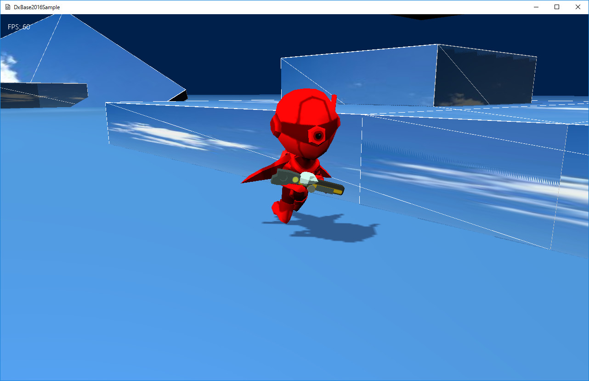

３０９．モデルのアニメーション
ボーンアニメーション
前項で紹介したように、
DxBase2016フレームワークでは、モデルの形式を
独自フォーマットであつかいます。
この形式は、
.bmfという拡張子を持ち、
Autodesk社のFBXフォーマトを
データ変換ツール(Fbx2Bin)により変換して使用します。
前項では
アニメーションしない（つまりスタティックな）メッシュの描画を紹介しました。
この項では、
アニメーションをするモデルを扱います。これをフレームワークでは
ボーンモデルと称します。
ボーンというのは、直訳すると
骨という意味です。モデルデータの中に
骨の情報を含めます。データ形式は
行列です。つまり前項で紹介したような
Tポーズの状態から、
ローカル変換するための行列情報を含めるのです。これが
ボーン情報（行列）です。
ボーン情報（行列）は一つのモデルに対して複数作成します。たとえばこの項で紹介するモデルは
22個のボーンを持っています。
さて、これらボーンに対して、各頂点はどのように影響するのでしょうか。
各頂点には、
その頂点に影響を与えるボーンを4つ選択します。この
4つという値は固定です。フレームワークやエンジンによってはもっと少ない場合もあります。
DxBase2016フレームワークでは
4つという意味です。
各頂点は、その頂点に影響を与えるボーンと、その影響具合（これを
ウエイトといいます）を頂点データに持ちます。
ボーンと各頂点の関係を考えるのに、
人間（動物）の関節と皮膚について考えてみましょう。
ボーンは
関節です。皮膚の表面に、頂点があるとしましょう。この頂点は、近くの関節が動くと、一緒にその関節に影響されて伸び縮みします。実際には頂点が伸び縮みするのではなく、関節に引っ張られるような形でついていく感じです。しかし、関節は一つではないので複数の関節の影響を受けます。例えば肘に近い部分の頂点は、ほぼ、肘の影響しか受けません。しかし、肘と手首の中間にある頂点は、肘と手首の両方から影響を受けます。このように頂点によって、関節に影響をうける割合が違うのがわかります。
この割合が
ウェイトです。ある頂点が、関節１に30パーセント、関節2に50パーセント、関節3に20パーセント、関節4には0パーセント、という感じで設定します。
このように設定しておくと、ボーンが移動したときに、各頂点もそれにつられて移動しますが、影響する割合によって、移動する場所が変化します。この処理を、モデルが持つすべての頂点に行うと、滑らかな動きを演出できるのです。この処理を
スキン処理といいます。そしてスキン処理をするメッシュを
スキンメッシュといいます。
スキンメッシュは上記の
ボーンモデルと同じ意味です。
スキンメッシュといういい方のほうが一般的です。（なぜ言い方を変えたかというと、データ的には前項の
スタティックに対して、
ボーンデータが入っているという違いを強調するためです。
スキンという意味合いは、データ形式ではなく、
処理方法のことなので、違う名称にしました）。
このようにして、各瞬間瞬間のボーン行列を変化させることにより、
アニメーションを実装しています。
アニメーションの2つの方法
さて、各ボーン行列を変化させて行うアニメーションですが、その変化方法に２つの方法があります。
階層化方式と直接方式です。この違いを理解するのに、動物の体を考えてみましょう。
動物の体は、骨と関節が組み合わさって、柱を形成しています。例えば、腰の骨を中心と考えると、そこから背骨、首、肩、ひじ、手首、というように、腰の骨から手首に至るまで、階層的に並んでいます。これを親子関係でいうなら、腰が動けばその子供や孫にあたる関節や首が一緒に影響されますが、肘が動くだけなら、手首にしか影響をあたえません。
これらの関係を
階層的にデータとして持つ方法があります。つまり親子の関係を定義し、子は親からの相対行列のみを持つという考え方です。これが
階層化方式です。
これに対して、
直接方式は、各ボーンを、
中心（例えば腰）からの直接的な相対行列によって管理します。
なので、各ボーン行列には、お互い何の関連性もありません。極端な話、肩のボーンが動くだけなら、スキン化されている頂点は引っ張られますが、ひじや手首が一緒に動くことはありません。
この2つの方式には利点と欠点があります。
階層化方式は、データは複雑ですが、例えば３Ｄソフトが書きだすデータ内に親子関係が記されているので、例えば腕を振るスピードや角度を微調整しようといった場合に、ちょっとした修正なら３Ｄソフトに戻らなくても修正可能です。しかし、
直接方式は、階層化情報は３Ｄソフト内にはありますが、再生する側（つまりゲーム側）にはその情報を持たないので、ちょっとした修正も３Ｄモデルまで戻らなければいけません。
データ変換ツール(Fbx2Bin)の作成するデータは
直接方式を採用しています。そのほうがデータ書き出しが単純なのと、
FBX_SDKの仕様が複雑なため（たとえばボーン階層を複数持てるなど）、それを解析するメリットがあまりないからです。もちろん
データ変換ツール(Fbx2Bin)を修正して
階層化方式にすることは可能です。（かなり勉強になること請け合いです）。
ちなみに
階層化方式を取っていたデータは、たとえばマイクロソフト社の
Xファイル形式があります。DirectX9のころはこのファイル形式にDirectX自体が対応していて、また
Xファイル形式で書き出せる３Ｄソフトも多かったのですが、DirextX11で完全に
Xファイル形式に対応しなくなったために、現在では３Ｄソフト側でも
Xファイル形式で書き出せるものは少なくなりました。
Fbx2Binの書き出すデータ
さて、
データ変換ツール(Fbx2Bin)の書き出すデータについて若干説明します。（詳しくはFbx2Binの解説を参照ください）。
Fbx2Binのアニメーションは
サンプルという単位で扱います。FBX_SDKは複数の
アニメーションラインを作成できますが、Fbx2Binで読み取れる
アニメーションラインは一つです。
アニメーションラインというのは、１つのアニメーションを定義するデータです。３Ｄソフトは複数作成できます。たとえば
歩く、走る、待機などのアニメーションを別々に作成できます。
しかしFbx2Binで読めるようにするためには、これらのアニメーションを、
１つのアニメーションラインにまとめて作成する必要があります。（これは通常グラフィッカーの仕事です）。たとえば、0秒目から3秒までは
、3秒から10秒までは歩きのように、複数のアニメーションを、１つのラインにまとめます。そしてその情報をプログラマに伝えます。
Fbx2Binは、そのようにして作成されたFBXファイルを、実際に再生しながらその瞬間瞬間のボーン行列をサンプリング（抽出）します。たとえば、サンプル単位が１秒間に10個と指定して保存すると、１秒間に１０セットのボーン行列の配列が保存されます。
このことからわかるように、データを書き出す側でこのサンプル単位を細かくすると、より、FBXデータに合ったデータが作成できるのがわかります。しかし細かくすればいいというものではなくて、たとえばサンプル単位を60にすると、ボーン数が22ですから、1秒間に1320個の行列ができます。これではデータ的にも重くなりすぎます。
.bmfデータの再生
このようにしてFbx2Binによって作成されたデータ.bmfデータを再生する側（ゲーム側）では、サンプル情報をアニメーションのキーフレームとして扱います。
キーフレームというのは基準の行列です。たとえば、10番目のサンプル行列と11番目のサンプル行列のあいだを変化させる場合、10番目のサンプル行列とぴったりしたタイミングであればその行列を、11番目のサンプル行列とぴったりしたタイミングであればその行列で描画するわけですが、その間は10番目と11番目の行列間を補完処理をして求めます。この処理により滑らかな動きを再生しようと試みます。
このように補完計算するためにサンプル間隔が荒いと、すごく離れた行列同士の補完ということになり、実際にFBXの時のアニメーションとは全く別のアニメーションになってしまう危険があります。ですので、Fbx2Binでのサンプル間隔は荒すぎず、細かすぎずという、まあまあの再生ができる間隔にする必要があります。
ボーンモデルの表示
さて、ここまで簡単にFbx2Binのデータについて説明してきましたが、実際のゲームへの実装は、描画コンポーネントを使って行います。
Sample309ディレクトリのソリューションを開いて、リビルド、実行してみましょう。すると以下の画面が現れます。

図3009a
ここでは前項でTポーズだったモデルが、アニメーションしながら移動します。Aボタンでジャンプすると再生されるアニメーションが変わります。
ここでの記述は、まず前項同様、GameStage::CreateResourses()関数でリソースの登録から始まります。
void GameStage::CreateResourses(){
//中略
App::GetApp()->RegisterBoneModelMesh(L"Chara_R_MESH",
App::GetApp()->m_wstrRelativeDataPath, L"Chara_R.bmf");
}
App::GetApp()->RegisterBoneModelMesh()関数は、指定された.bmfファイルをボーンモデルとして読み込みます。ボーン情報やスキン情報が入ってなければ例外が発生します。
ここでうまく読み込むことができたら、あとはプレイヤーでそのリソースを使用できます。
以下はPlayer::OnCreate()関数です。
void Player::OnCreate(){
//中略
Matrix4X4 SpanMat; // モデルとトランスフォームの間の差分行列
SpanMat.DefTransformation(
Vector3(1.0f, 1.0f, 1.0f),
Vector3(0.0f, XM_PI, 0.0f),
Vector3(0.0f, -0.5f, 0.0f)
);
//影をつける（シャドウマップを描画する）
auto ShadowPtr = AddComponent<Shadowmap>();
//影の形（メッシュ）を設定
ShadowPtr->SetMeshResource(L"Chara_R_MESH");
ShadowPtr->SetMeshToTransformMatrix(SpanMat);
//描画コンポーネントの設定
auto PtrDraw = AddComponent<PNTBoneModelDraw>();
//描画するメッシュを設定
PtrDraw->SetMeshResource(L"Chara_R_MESH");
PtrDraw->SetMeshToTransformMatrix(SpanMat);
PtrDraw->AddAnimation(L"Default", 60, 20, true, 20.0f);
PtrDraw->AddAnimation(L"Hit", 30, 30, false, 30.0f);
PtrDraw->ChangeCurrentAnimation(L"Default");
//透明処理
SetAlphaActive(true);
//中略
}
赤くなっているのが重要なところです。まず
//描画コンポーネントの設定
auto PtrDraw = AddComponent<PNTBoneModelDraw>();
で、描画コンポーネントをPNTBoneModelDrawにします。このコンポーネントはボーンモデル専用の描画コンポネントです。続いて、メッシュを設定して
PtrDraw->AddAnimation(L"Default", 60, 20, true, 20.0f);
PtrDraw->AddAnimation(L"Hit", 30, 30, false, 30.0f);
PtrDraw->ChangeCurrentAnimation(L"Default");
のようにアニメーションを定義、そして、最初のアニメーションを設定します。
PtrDraw->AddAnimation()関数の引数は
void AddAnimation(const wstring& Name, int StartSample, int SampleLength, bool Loop,
float SamplesParSecond = 30.0f);
のようになっています。Nameはアニメーション名です。アニメーションを切り替えたりするのに、この名前を使います。
StartSampleとSampleLengthはintを指定します。開始サンプルと、サンプルの長さ（終了サンプルではないので注意！）です。マイナスの値は設定できません（例外が出ます）。
Loopは、ループするかどうか、です。ループする場合はtrueにします。
最後のSamplesParSecondは、秒あたりのサンプル数です。floatです。これも0.0f以下は指定できません。この値が大きくなると再生スピードが速くなります。1秒間にこなすサンプル数なので、たとえば1秒間に20こなすのと30こなすのでは、後者が速くなりますね。
ここでは２つのアニメーションを定義しています。L"Default"とL"Hit"です。前者は通常移動中のアニメーションです。こちらはループします。
後者はジャンプした時に銃を構えるアニメーションです。こちらはスピードを少し速くしています。またループしません。
このようにアニメーションを定義し、PtrDraw->ChangeCurrentAnimation()で最初のアニメーションを設定しています。
アニメーションの更新と変更
アニメーションの更新（アニメの進行）は自動で行われないので、OnUpdate()関数などに記述する必要があります。
void Player::OnUpdate(){
//中略
//アニメーションを更新する
auto PtrDraw = GetComponent<PNTBoneModelDraw>();
float ElapsedTime = App::GetApp()->GetElapsedTime();
if (PtrDraw->UpdateAnimation(ElapsedTime) &&
PtrDraw->GetCurrentAnimation() == L"Hit"){
PtrDraw->ChangeCurrentAnimation(L"Default");
}
}
描画コンポーネントのUpdateAnimation()関数には前ターンからの経過時間を設定します。
また、UpdateAnimation()関数の戻り値はそのアニメーションがループしない場合、アニメーションが終了したらtrueを返すという処理になっています。ですから、アニメーションがL"Hit"であった場合、L"Hit"が終了した場合にtrueが返ります。
なお、このサンプルではループしないアニメーションは、L"Hit"だけなので、if文内の、PtrDraw->GetCurrentAnimation() == L"Hit"のチェックは必要ないのですが、今後いくつものアニメーションを登録した場合、現在のアニメーションの特定が必要になる場合がありますので、記述しておきました。
また、ここでは、Player::OnUpdate()にアニメーションの更新を直接書いていますが、せっかくステートマシンを使用しているので、ふるまい関数（モーション関数）などに記述するほうが、より、いいソースなのは言うまでもありません。
ここで、アニメチェンジの対象となるL"Hit"ですが、開始は、ジャンプしたタイミングになります。以下がその記述です。
void Player::JumpMotion(){
//中略
//アニメーションを変更する
auto PtrDraw = GetComponent<PNTBoneModelDraw>();
PtrDraw->ChangeCurrentAnimation(L"Hit");
}
このアニメーションL"Hit"は、ループしません。ですので、アニメが終わると、Player::OnUpdate()関数で呼び出しているPtrDraw->UpdateAnimation()関数がtrueを返すので、L"Default"に戻すことができます。